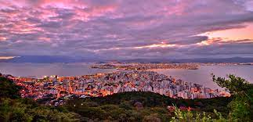
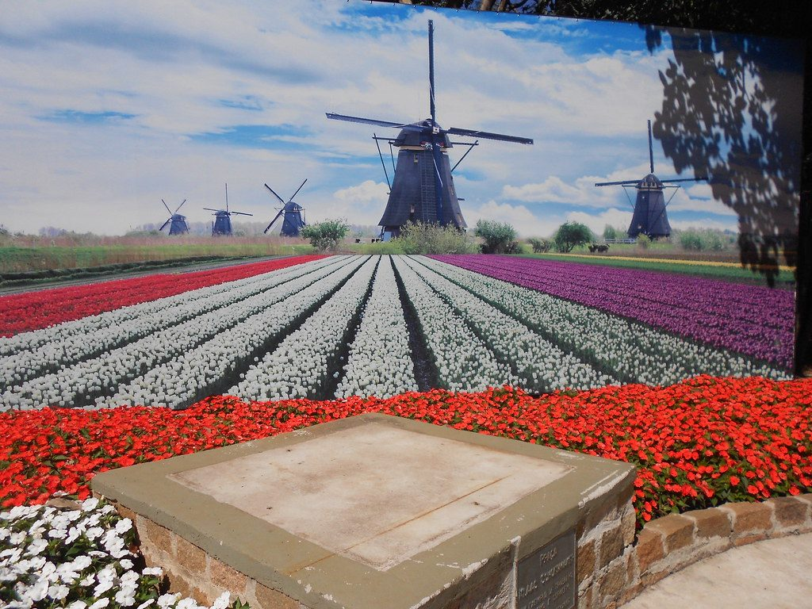

Santa Catarina, localizada na região Sul do Brasil, é um estado com uma variedade de pontos turísticos que atraem visitantes durante todo o ano. Aqui estão alguns dos principais pontos turísticos de Santa Catarina:
Bem-vindo à Santa Catarina

Florianópolis: A capital do estado, Florianópolis, é conhecida por suas belas praias, como a Praia da Joaquina, a Praia Mole e a Praia dos Ingleses. Além das praias, a cidade também possui atrações como a Lagoa da Conceição, a Ponte Hercílio Luz e o Mercado Público.

Balneário Camboriú: Uma das cidades mais visitadas de Santa Catarina, Balneário Camboriú, oferece praias deslumbrantes, como a Praia Central e a Praia de Laranjeiras, além de atrações como o Parque Unipraias, o Cristo Luz e o complexo de entretenimento da Avenida Atlântica.

Joinville: Conhecida como a "Cidade das Flores" e famosa pelo seu Festival de Dança, Joinville possui atrações como o Museu Nacional de Imigração e Colonização, o Parque Zoobotânico, a Rua das Palmeiras e o Centro Cultural da Casa da Cultura.